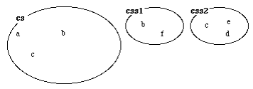
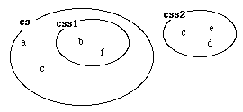

The Container Libraries
subsets: is a set containing the subsets of this classificationSet.
insertSubset: takes a classificationSet and inserts it as a subset of this classificationSet. The exception illegalSubset will be invoked if the subset inserted contains elements, that are not instances of a subpattern of the element type of this classificationSet.
superSet: if this classificationSet is a subset of another classificationSet, superSet will reference that classificationSet.
scanUnclassified: like scan except that it only scans those elements that are not member of any subsets of this classificationSet.
Let us illustrate by an abstract example, assuming that css1 contains the elements a, b and c, css2 contains the elements c, d and e, and finally cs contains the elements b and f:

Then after
css1[]->cs.insertSubset
cs will contain the original elements, and the css1 subset:

Note that the element b, originally located in both cs and css1, now is located exclusively in css1. In this situation, cs.scan(# ... #) will run through the elements a, b, c, d, e and f. and css1.scan(# ... #) will run through the elements b and f.
If we then execute
css2[]->cs.insertSubset
we will have the following situation:

Note again, that c is exclusively in css2. If we now execute
g[]->css1.insert, f[]->css2.insert and b[]->cs.delete
we will have the following situation:

Finally,
css1.scanUnclassified(# ... #)
will only scan the elements a and b, whereas
css1.scan(# ... #)
will scan all elements (i.e. a, b, c, d, e, f and g).
| Containers Reference Manual | © Mjølner Informatics |